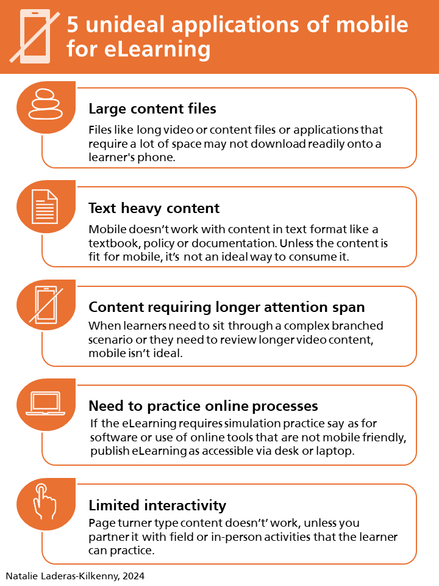
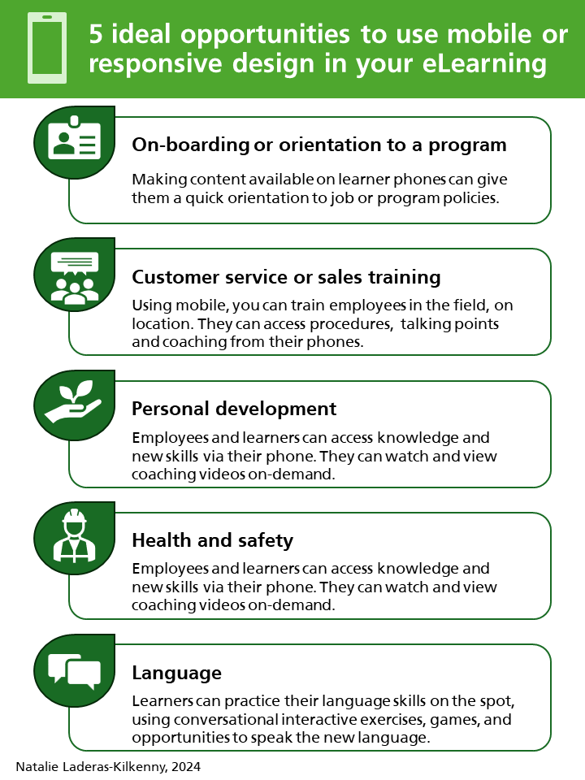

Work Samples
Work from 2026
Latest Video
Empowering the Mission - A 12 Week AI Adoption Curriculum
Link - Slide Deck: Empowering the Mission

Using CoPilot to Write Powerful Cross-platform Prompts
Link - Slide Deck: Writing Powerful Prompts with Co-pilot

Writing Powerful AI Prompts
Illustration of CREATE prompt example used in the presentation. This was a brief presentation I put together to illustrate my process as an instructional designer.
Link - Slide Deck How to Write Powerful AI Prompts - PDF of presentation.
Link - Presentation notes version - PDF of presenter notes.

Power Thinking Curriculum
Purpose of this content was to develop a prototype course outline, storyboard and graphic samples for a curriculum on helping young people of middle school and high school age develop critical thinking skills in a world where it's easy to use AI to complete assignments.
Note about AI Use for this content. Some of the graphics used for this project (the chibi and kawaii anime-like graphics were developed using Gemini and Notebook LM). AI tools such as Gemini, Google Infinity, and Claude were use to brainstorm topics and provide suggestions or inspiration, but text content was written or revised directly by me.
Sample Storyboard
This provides a view of the introduction of the content and an overview of the course. Ideally this content can be created in Articulate Storyline.
Link - Intro to Course Storyboard Version
Sample Printable Content Page - Using Socratic Questions for Power Thinking
Link - Socratic Questions for Power Thinking

Work from before 2024
Articulate eLearning on Ethnographic Interviewing
Link - Use of Rise and Storyline to create eLearning

Design Examples
View a sampler of Instructional Design Work >2024.
Link - PDF of various worksamples with explanations

Infographic samples
Various graphics created in different tools.
Graphics developed in PowerPoint

